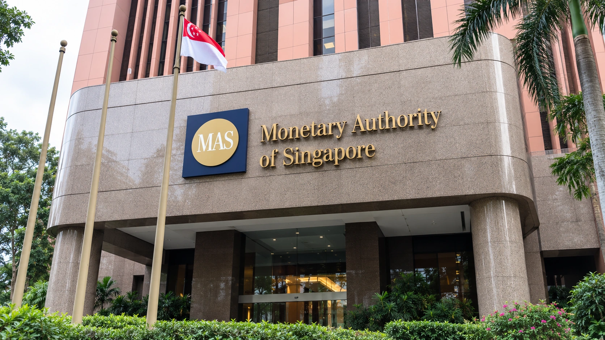

Ripple, Visa and Mastercard join Singapore-led digital-money push
Malaysia and Thailand join Singapore in shaping cross-border settlement rules for tokenized deposits and regulated stablecoins.

Singapore's digital-money settlement initiative is expanding across Southeast Asia, with the central banks of Malaysia and Thailand joining as policymaker members and Ripple, Visa and Mastercard among the new participants. The Monetary Authority of Singapore announced the changes Friday, bringing payment networks, banks and digital-asset providers into a broader effort to make different forms of money work across borders.
The initiative, called BLOOM, covers tokenized bank deposits and regulated stablecoins. Its expansion is a coordination step, rather than the launch of a new regional currency or a single payment network. The practical objective is to establish how institutions accept digital money from one another, exchange it and complete settlement when different technologies and legal systems are involved.
Moving a token is only part of making a payment
A business paying a supplier abroad needs more than a quick transfer on a ledger. The recipient must be willing and legally able to accept the asset, identify the sender, value what it receives and determine when the payment obligation is discharged. A technically successful transfer can still leave questions about redemption, compliance or which institution owes the money.
BLOOM's significance lies in addressing these connections between systems. MAS says participants will examine cross-jurisdiction acceptance and settlement, interoperability and programmable controls. Those controls include identity verification, sanctions screening and transaction restrictions. The program is attempting to make institutional digital money usable within financial arrangements that still have distinct supervisory requirements.
That is different from assuming all tokens represent the same claim. A tokenized deposit records a claim on a bank, while a stablecoin depends on its issuer's legal structure, reserves and redemption terms. Our guide to stablecoin backing and redemption explains why a stated peg alone does not settle those questions. Connecting systems does not erase the underlying differences between their assets.
Why the central-bank membership matters
Bank Negara Malaysia and the Bank of Thailand will participate alongside Singapore's monetary authority. MAS said the institutions will work with industry on common approaches while allowing for differences in local requirements. This gives the initiative a way to examine regulatory and operational questions across jurisdictions, instead of treating one market's framework as universally applicable.
The economic case is that institutions could avoid negotiating every technical and operating arrangement separately with every counterparty. MAS identifies lower implementation costs and shorter deployment times as intended benefits. Those are program objectives, not measured savings announced Friday. Whether they emerge will depend on usable frameworks and financial institutions implementing them in actual services.
The expanded group also includes the World Bank Group, whose role brings experience in payment-system modernization and financial inclusion. Airwallex, Maybank, Monee, Nium and ShopeePay were also named as new participants. The mix points toward business payments and financial infrastructure, rather than a project centered on trading tokens on cryptocurrency exchanges.
Ripple's participation is not an XRP adoption announcement
For crypto readers, Ripple's presence is notable, but the announcement does not say that XRP will be used for BLOOM settlement. Ripple the company, the XRP Ledger network and the XRP asset are distinct. Membership provides no basis to infer a mandatory bridge token, future transaction volume or a direct effect on the token's price.
The same distinction applies to Visa and Mastercard: joining a collaborative initiative does not establish that every transaction will run on either company's existing card network. The commercial value will depend on the services ultimately built and the roles participants perform. A membership list is evidence of engagement, rather than a disclosed revenue contract.
MAS's initiative page identifies corporate treasury, trade finance and payments as relevant uses. It also includes exploration of AI agents making payments within predefined limits. Such applications would need clear authorization and safeguards. The design question is who permits a transaction and bears responsibility for it, alongside how efficiently the money moves.
Recent launches show why product-specific terms remain essential. HSBC's Hong Kong stablecoin and SoFi's tokenized deposit have different structures and operating arrangements. BLOOM's next consequential step will be demonstrating how institutions connect such arrangements across borders, with clear settlement rules and published evidence of working transactions.
Sources and methodology
Sources checked October 23, 2026. Reported findings and company or regulatory statements are attributed in the text; discussion of financial implications is editorial analysis. The generated cover is illustrative.